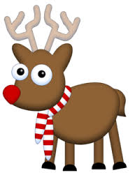
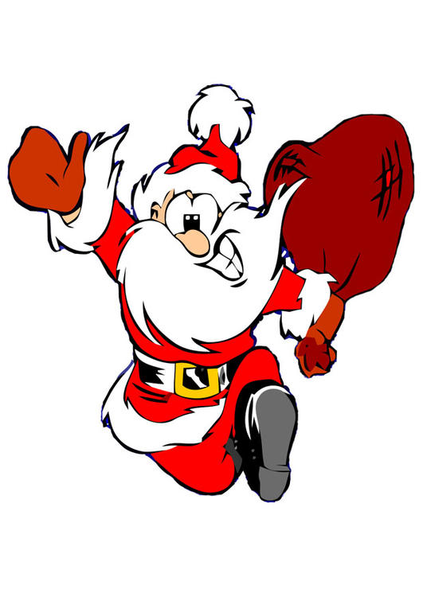

Jultomten och Rudolf har alltid varit bra vänner. Alla tyckte om dom och dom tyckte om varandra.Men en dag så bråkade dom. Rudolf ville vara längst fram i flocken istället för tillsammans med en annan ren.Detta gillade inte tomten så han satte Rudolf längst bak som en läxa.Detta skapade stor frustration hos Rudolf, så han sa upp sig och flyttade till Brasilien för att sola.Jultomten saknade Rudolf och bad honom komma tillbaka, då fick Rudolf som han ville och båda var lyckliga.